Excel & Financial Planning
Excel, budgeting, financial planning, formulas, charts, slicers, and spreadsheet-based organization.
Business Administration Portfolio
Junior at California State University, Sacramento pursuing a B.S. in Business Administration with a focus in strategy, logistics, operations, analytics, and leadership.
I am an incoming Operations Management Intern at Target for Summer 2026 and am building a career around retail operations, business strategy, team leadership, process improvement, and data-informed decision-making. My academic projects and professional experience demonstrate skills in Excel, Microsoft Access, business analytics, marketing strategy, ethics, human resources, customer service, and operations management.

Skills Snapshot
Excel, budgeting, financial planning, formulas, charts, slicers, and spreadsheet-based organization.
Microsoft Access, databases, queries, forms, reports, information systems, and business data organization.
Business analytics, regression, JMP, hypothesis testing, KPI tracking, data interpretation, and recommendations.
Marketing, SWOT analysis, 4P marketing mix, brand strategy, ethics, human resources, stakeholder analysis, and presentations.
Background
My background combines business coursework, operations experience, leadership development, professional networking, and hands-on academic projects across analytics, information systems, marketing, ethics, and financial planning.
B.S. Business Administration — Strategy & Logistics
2025 – Present | Expected Graduation: 2027
Business Administration student focused on operations, logistics, strategy, management, analytics, marketing, entrepreneurship, and professional communication.
Relevant coursework includes Introduction to Business Analytics, Management Information Systems, Microsoft Excel business modeling, Principles of Marketing, Human Resources and Organizational Behavior, business ethics, accounting, economics, statistics, and information systems.
A.S. Business Administration — General
2021 – 2024 | President's Honor Roll, Fall 2024
Incoming Operations Management Intern
Summer 2026
Selected for a summer internship focused on retail operations, leadership, strategy, team execution, and operational problem-solving.
Operations Manager — Rocklin, CA
March 2021 – April 2025 | Promoted from Game Master to Assistant Manager
Shift Lead — Rocklin, CA
April 2021 – February 2022
Supported customer service, shift operations, transaction accuracy, teamwork, product knowledge, and store standards in a fast-paced service environment.
Member — Oct 2024 to Mar 2025
Represented Beat the Room during networking events and conferences, building professional communication, relationship management, and community outreach experience.
Student Member — Aug 2023 to 2024
Featured Work
Selected academic projects that demonstrate spreadsheet modeling, database management, business analytics, marketing strategy, ethics, communication, and problem-solving skills.
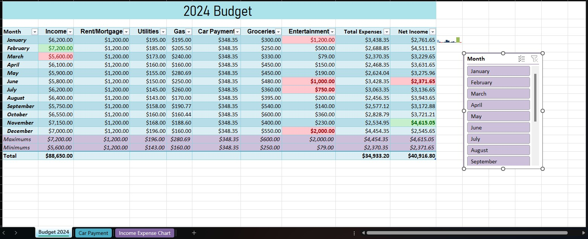
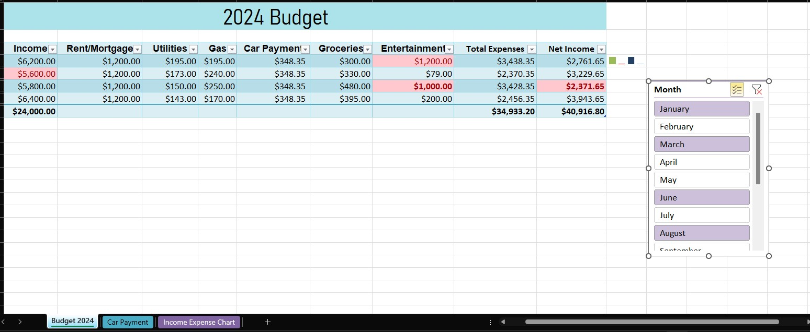
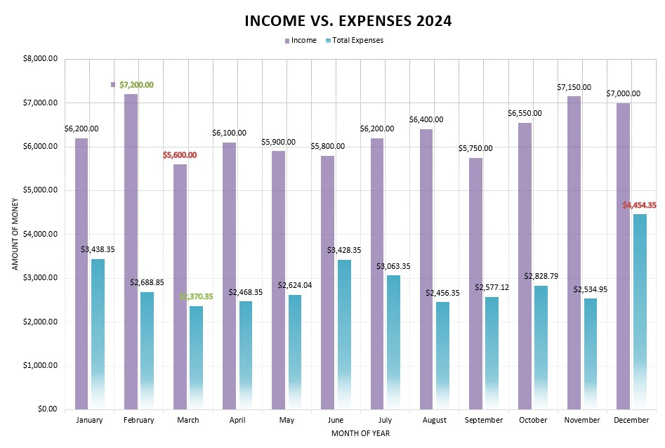
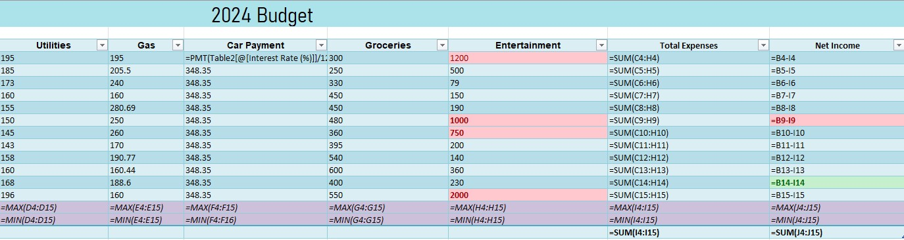
Microsoft Excel Course / Financial Planning Project
Objective: Create a personal family budget spreadsheet for 2024 that organizes income,
expenses, car payments, and monthly financial activity.
Results: Built an Excel financial planning tool using SUM and PMT formulas,
charts, sparklines, maximum and minimum spending comparisons, and a slicer for monthly analysis.
The project demonstrates spreadsheet organization, budgeting, financial planning, and data visualization skills.
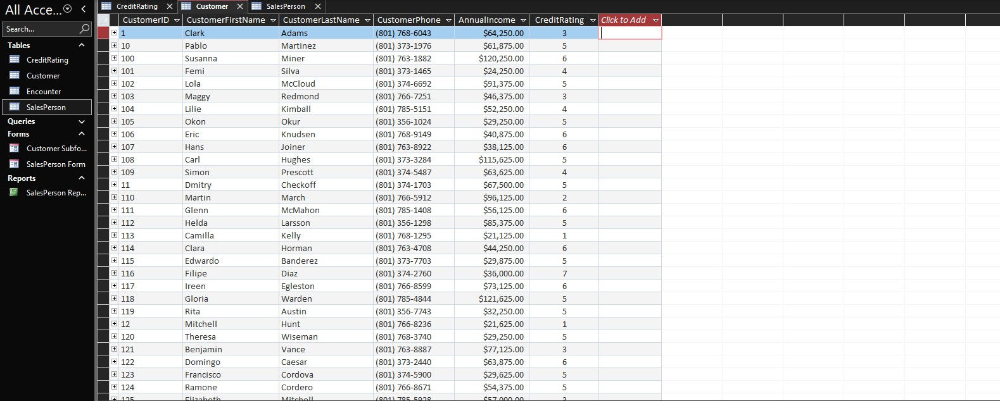
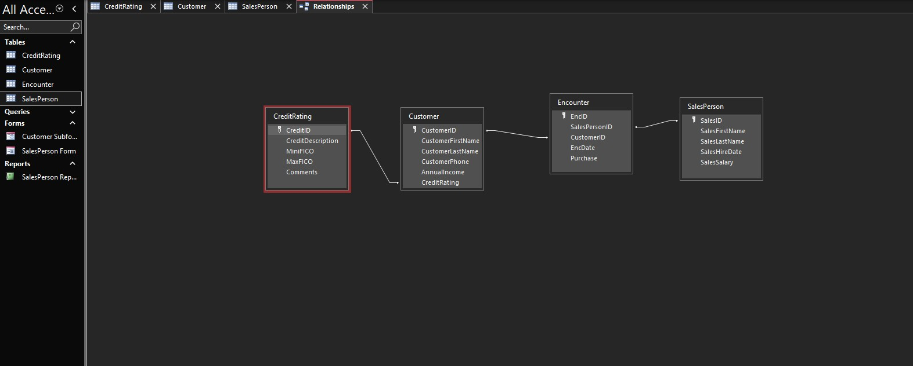
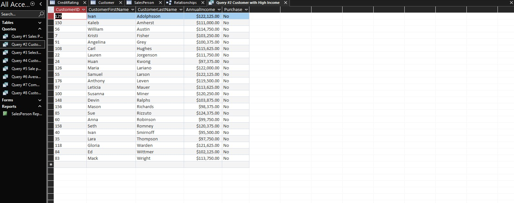
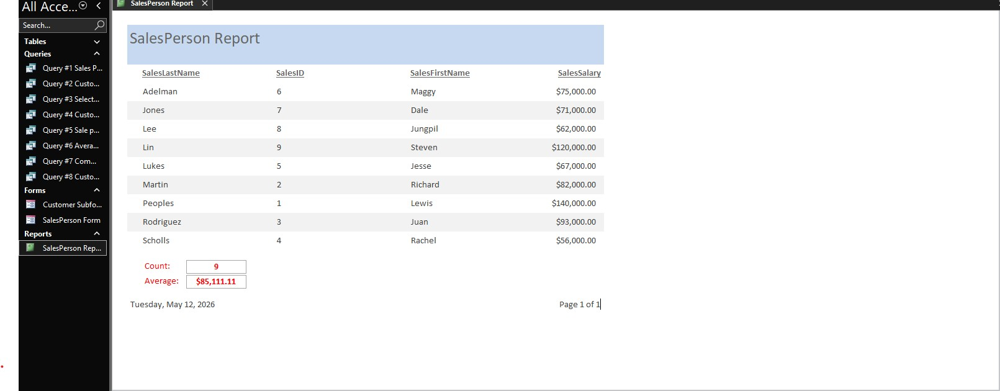
Management Information Systems / Database Management Project
Objective: Build a Microsoft Access database for a car dealership to organize customers,
salespeople, credit ratings, purchase records, and sales activity.
Results: Created database tables, relationships, queries, a main form with a customer subform,
and a formatted report. The project demonstrates database structure, information systems, query logic,
reporting, and business data organization.
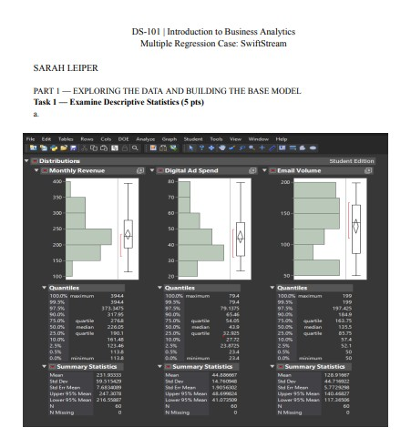
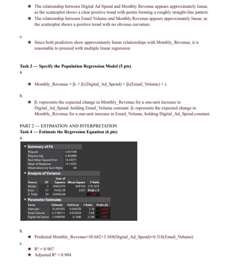
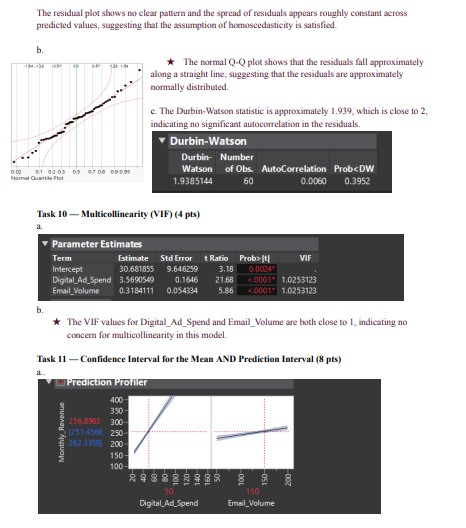
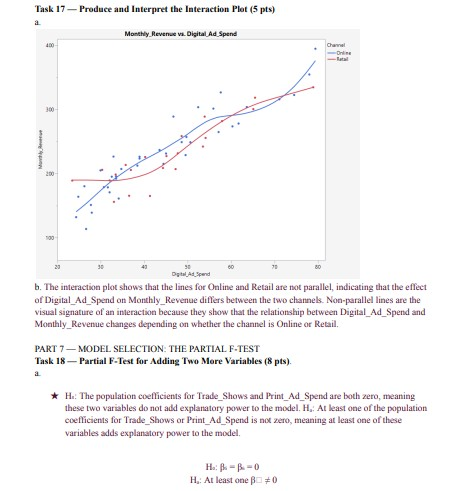
Introduction to Business Analytics / Regression Analysis Project
Objective: Analyze SwiftStream Retail marketing data to determine how digital advertising,
email volume, and sales channel influence monthly revenue.
Results: Completed a multiple regression case using JMP, including descriptive statistics,
scatterplot analysis, regression modeling, hypothesis testing, confidence intervals, prediction intervals,
residual diagnostics, dummy variables, interaction terms, and business recommendations for marketing budget decisions.
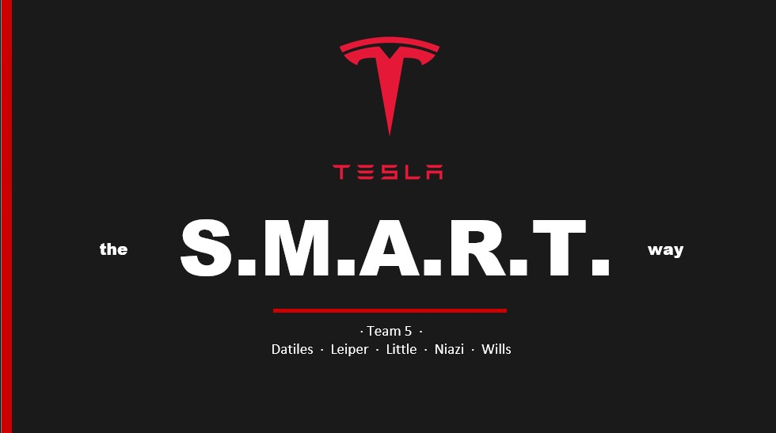
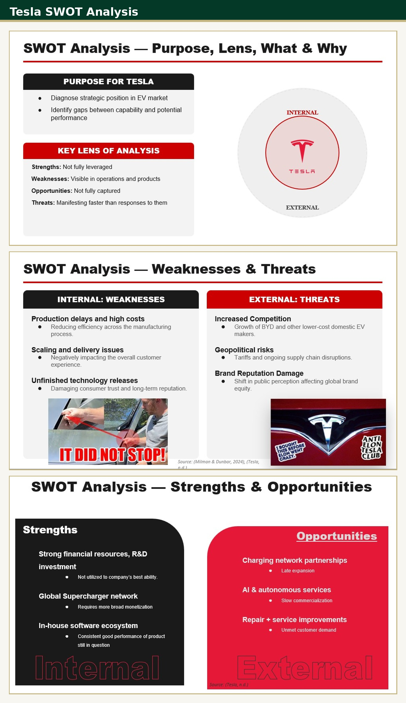
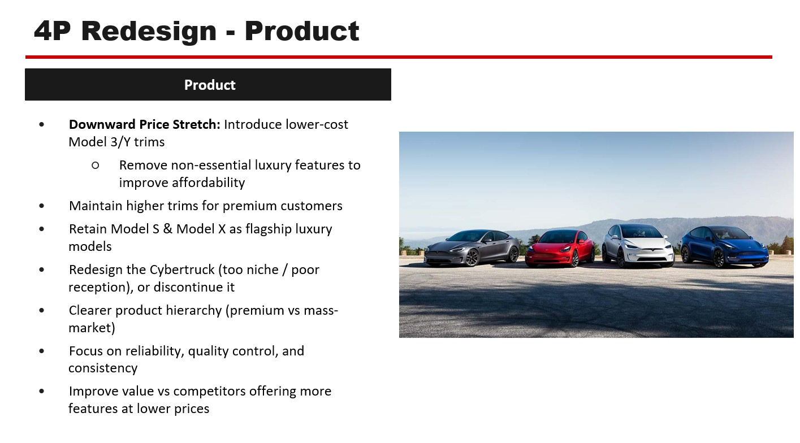
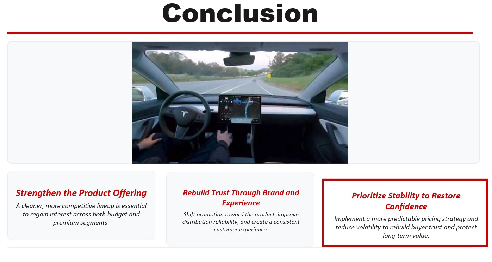
Principles of Marketing / Brand Strategy Presentation
Objective: Analyze Tesla's brand challenges, competitive position, reputation concerns,
product decisions, and marketing strategy using business frameworks.
Results: Completed a group marketing presentation that examined Tesla's EV competition,
SWOT analysis, current 4P marketing mix, and redesigned product, promotion, price, and place strategy.
Final recommendations focused on strengthening the product lineup, rebuilding trust, improving customer experience,
and restoring pricing stability.
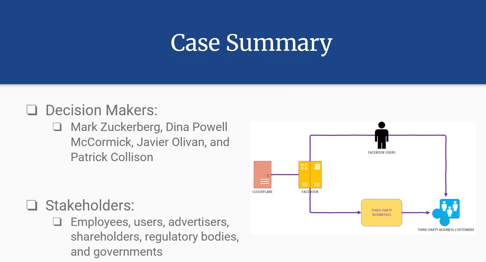
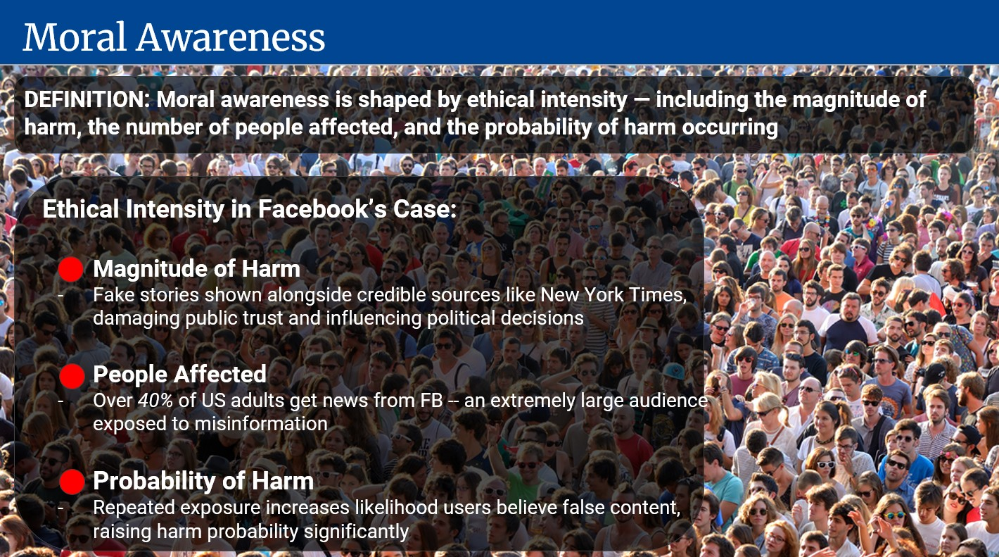
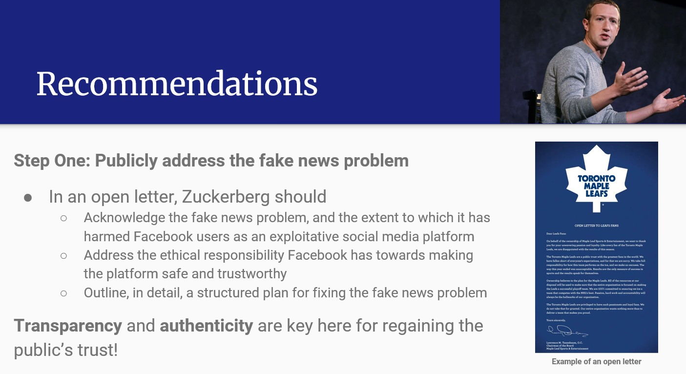
Human Resources & Organizational Behavior / Ethics Case Study
Objective: Evaluate Facebook's fake news problem through an ethics and organizational behavior lens,
focusing on decision makers, stakeholders, misinformation, data misuse, and public trust.
Results: Completed a team case study that applied moral awareness, moral judgment,
moral intent, and moral behavior frameworks. The project concluded with recommendations for public accountability,
platform transparency, algorithmic responsibility, and stronger safeguards against misinformation.
Resume
A public resume preview is included below. The full PDF version is available for download.
Contact
I am open to opportunities related to operations, logistics, retail management, strategy, business analytics, customer experience, and leadership development.
sarah.leiper@icloud.com